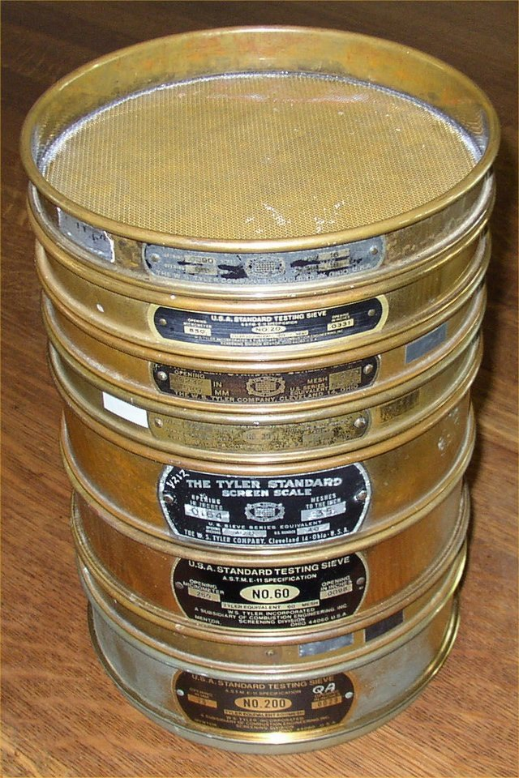
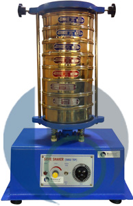
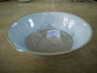
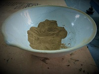

Sieve Analysis
Home
Theory
Procedure
Observation
Result
Apparatus Required
1. Standard Set of Sieves

2. Sieve Shaker

3. Samples of different Soil Types

4. Dish

5. Cleaning Brush
6. Weighing Balance